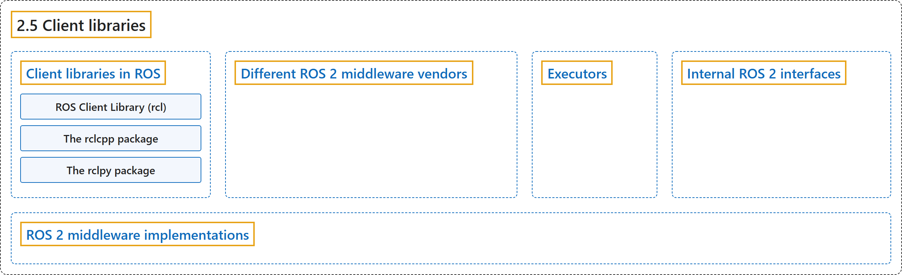

2.5 Client libraries
Classification

Glossary
| Term | Definition | 中文翻译 | Source |
|---|---|---|---|
| 2.5 Client libraries 客户端库 |
"Client libraries are the APIs that allow you to implement your ROS code." | 客户端库是让你实现 ROS 代码的 API。 | Open Robotics, n.d.-a, "Client libraries in ROS", para. 1 |
| Client libraries in ROS ROS 中的客户端库 |
"Client libraries expose the core functionality of ROS." | 客户端库提供 ROS 的核心功能。 | Open Robotics, n.d.-a, "Client libraries in ROS", para. 2 |
| ROS Client Library (rcl) ROS 客户端库（rcl） |
"Client libraries in ROS use a common core ROS Client Library (rcl) interface that implements logic and behaviour of ROS concepts." |
ROS 中的客户端库使用一个共同的核心 ROS 客户端库（rcl）接口，它实现 ROS 各概念的逻辑和行为。 |
Open Robotics, n.d.-a, "ROS Client Library ( rcl )", para. 1 |
| The rclcpp package rclcpp 软件包 |
"The ROS Client Library for C++ (rclcpp) is the user-facing, idiomatic C++ interface that provides all of the ROS client functionality, such as creating nodes, publishers, and subscriptions." |
C++ 版 ROS 客户端库（rclcpp）是面向用户、符合 C++ 习惯的接口，提供 ROS 客户端的全部功能，如创建节点、发布者和订阅。 |
Open Robotics, n.d.-a, "The rclcpp package", para. 1 |
| The rclpy package rclpy 软件包 |
"The ROS Client Library for Python (rclpy) provides an idiomatic Python experience that uses native Python types and patterns, such as lists and context objects." |
Python 版 ROS 客户端库（rclpy）提供符合 Python 习惯的体验，使用原生 Python 类型和模式，如列表和上下文对象。 |
Open Robotics, n.d.-a, "The rclpy package", para. 1 |
| Different ROS 2 middleware vendors 不同的 ROS 2 中间件供应商 |
(context) "ROS 2 supports multiple middleware implementations which provide discovery, serialisation, and transportation communications." | （语境）ROS 2 支持多种中间件实现，它们提供发现、序列化和传输通信。 | Open Robotics, n.d.-b, "Different ROS 2 middleware vendors", para. 2 |
| Executors 执行器 |
"An Executor uses one or more threads of the underlying operating system to invoke the callbacks of subscriptions, timers, service servers, action servers, etc. on incoming messages and events." | 执行器使用底层操作系统的一个或多个线程，在收到消息和事件时调用订阅、定时器、服务服务器、动作服务器等的回调。 | Open Robotics, n.d.-c, "Overview", para. 1 |
| Internal ROS 2 interfaces ROS 2 内部接口 |
"The internal ROS interfaces are public C APIs that are intended for use by developers who are creating client libraries or adding a new underlying middleware, but are not intended for use by typical ROS users." | ROS 内部接口是公开的 C API，供创建客户端库或添加新的底层中间件的开发者使用，普通 ROS 用户不需要使用。 | Open Robotics, n.d.-d, "Internal ROS 2 interfaces", para. 2 |
| ROS 2 middleware implementations ROS 2 中间件实现 |
"ROS middleware implementations are sets of packages that provide the underlying communication framework for ROS 2." | ROS 中间件实现是为 ROS 2 提供底层通信框架的软件包集合。 | Open Robotics, n.d.-e, "ROS 2 middleware implementations", para. 2 |
References
Open Robotics. (n.d.-a). Client libraries. ROS 2 Documentation: Lyrical. Retrieved October 31, 2026, from https://docs.ros.org/en/lyrical/ROS-Framework/About-Client-Libraries.html
Open Robotics. (n.d.-b). Different ROS 2 middleware vendors. ROS 2 Documentation: Lyrical. Retrieved October 31, 2026, from https://docs.ros.org/en/lyrical/ROS-Framework/client-libraries/About-Different-Middleware-Vendors.html
Open Robotics. (n.d.-c). Executors. ROS 2 Documentation: Lyrical. Retrieved October 31, 2026, from https://docs.ros.org/en/lyrical/ROS-Framework/client-libraries/About-Executors/About-Executors.html
Open Robotics. (n.d.-d). Internal ROS 2 interfaces. ROS 2 Documentation: Lyrical. Retrieved October 31, 2026, from https://docs.ros.org/en/lyrical/ROS-Framework/client-libraries/About-Internal-Interfaces/About-Internal-Interfaces.html
Open Robotics. (n.d.-e). ROS 2 middleware implementations. ROS 2 Documentation: Lyrical. Retrieved October 31, 2026, from https://docs.ros.org/en/lyrical/ROS-Framework/client-libraries/About-Middleware-Implementations.html